Das Informationsbuch
des Hyuga-Clans
Geschichte, Philosophie, Byakugan und Juken, Hierarchie und Ehrenkodex - gesammelt für jedes Mitglied des Clans.
"Ein Hyuga wird nicht durch seine Augen definiert, sondern durch die Ehre, mit der er seinen Weg beschreitet."Schlusswort des Informationsbuchs
Einleitung
Der Hyuga-Clan zählt zu den ältesten, angesehensten und traditionsreichsten Clans Konohagakures. Seit Generationen bewahren seine Mitglieder das Byakugan, eines der mächtigsten Dojutsu der Shinobi-Welt, sowie den einzigartigen Kampfstil des Juken.
Durch ihre außergewöhnliche Chakra-Kontrolle, ihre Disziplin und ihre jahrhundertealten Traditionen geniessen die Hyuga hohes Ansehen. Der Clan versteht sich nicht nur als Familie, sondern als Gemeinschaft, deren Stärke auf Zusammenhalt, Loyalität und gegenseitigem Vertrauen basiert. Jeder Hyuga trägt Verantwortung - gegenüber seiner Familie, seinem Clan und dem Dorf.
Dieses Handbuch dokumentiert Geschichte, Werte, Regeln, Hierarchie und Traditionen des Clans und dient zugleich als Leitfaden für jedes Mitglied.
Die Geschichte des Hyuga-Clans
Die Wurzeln des Hyuga-Clans reichen bis in die frühesten Zeiten der Shinobi-Welt zurück. Als direkte Nachfahren Hamura Otsutsukis erbten die Mitglieder das Byakugan - ein Dojutsu, das ihnen eine außergewöhnliche Wahrnehmung und Kontrolle über Chakra verleiht.
Mit der Gründung Konohagakures gehörte der Hyuga-Clan zu den einflussreichsten Familien des Dorfes. Über viele Generationen hinweg beschützten seine Mitglieder sowohl das Dorf als auch die Geheimnisse ihres Clans. Das Byakugan wurde zu einem Symbol für Präzision, Disziplin und Verantwortungsbewusstsein.
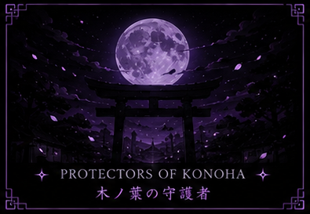
Über Jahrhunderte entwickelte sich eine klare Familienstruktur mit einer Hauptfamilie und einer Zweigfamilie. Diese Ordnung sollte das Erbe des Clans schützen und seine Techniken bewahren. Gleichzeitig führte sie jedoch zu Spannungen innerhalb der Familie.
Nach dem Vierten Shinobi-Weltkrieg begann ein Wandel. Alte Traditionen wurden überdacht und viele Strukturen reformiert, ohne dabei die Identität des Clans aufzugeben. Bis heute verbinden die Hyuga ihre historischen Werte mit dem Anspruch, sich den Herausforderungen einer neuen Zeit anzupassen.
Die Entstehung des Clans
Der Ursprung des Hyuga-Clans liegt in der Abstammung von Hamura Otsutsuki. Seine Nachkommen führten das Byakugan über Generationen hinweg weiter und entwickelten daraus einen einzigartigen Kampfstil, der ausschliesslich innerhalb des Clans gelehrt wurde.
Mit der Zeit entstand eine feste Gemeinschaft, deren Mitglieder ihre Fähigkeiten nicht allein zur eigenen Stärke nutzten, sondern zum Schutz ihrer Familie und ihrer Verbündeten. Wissen wurde nur innerhalb des Clans weitergegeben, wodurch zahlreiche geheime Techniken bis heute erhalten geblieben sind.
Die Kombination aus außergewöhnlicher Wahrnehmung, präziser Chakra-Kontrolle und jahrhundertelangem Training machte den Hyuga-Clan zu einem der mächtigsten Taijutsu-Clans der Shinobi-Welt.
Die Philosophie des Clans
Die Stärke eines Hyuga wird nicht allein an seinen Fähigkeiten gemessen. Wahre Grösse zeigt sich im Charakter.
Jedes Mitglied wird bereits in jungen Jahren gelehrt, dass Disziplin, Selbstbeherrschung und Verantwortung wichtiger sind als Ruhm oder Macht. Die Grundgedanken des Clans lauten:
- Stärke dient dem Schutz und niemals der Unterdrückung.
- Disziplin führt zur Vollkommenheit.
- Kontrolle ist wertvoller als Aggression.
- Wissen überdauert körperliche Stärke.
- Die Familie steht über persönlichen Interessen.
- Ehre ist das höchste Gut eines Hyuga.
Diese Werte begleiten jedes Mitglied ein Leben lang und bilden die Grundlage aller Entscheidungen. Sie zeigen sich im Alltag jedes Mitglieds als gelebte Tugenden:
Das Byakugan
Das Byakugan ist das Kekkei Genkai des Hyuga-Clans und zählt zu den drei grossen Dojutsu der Shinobi-Welt.
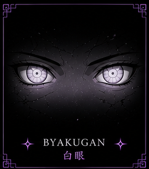
Durch das Aktivieren des Byakugan erweitern sich die Wahrnehmungsfähigkeiten des Anwenders erheblich.
- Nahezu vollständiges 360-Grad-Sichtfeld
- Erkennung des gesamten Chakrasystems
- Sicht auf sämtliche Tenketsu
- Wahrnehmung von Chakra selbst durch Hindernisse
- Beobachtung über grosse Entfernungen
- Analyse kleinster Bewegungen
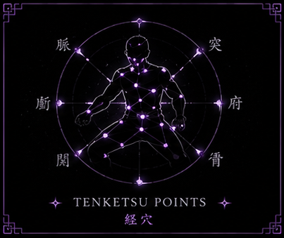
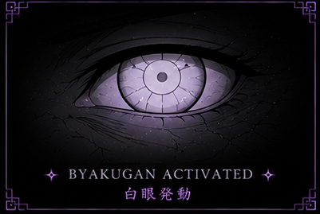
Diese Fähigkeiten machen den Hyuga-Clan zu hervorragenden Spähern, Verteidigern und Nahkämpfern.
Der Sanfte Fauststil (Juken)
Der Sanfte Fauststil ist die traditionelle Kampfkunst des Hyuga-Clans.
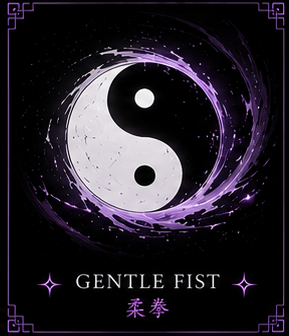
Im Gegensatz zu gewöhnlichem Taijutsu greift der Juken nicht die Muskeln oder Knochen eines Gegners an, sondern dessen Chakrasystem. Durch präzise Chakra-Stösse werden die Tenketsu getroffen und der Chakrafluss des Gegners gestört.
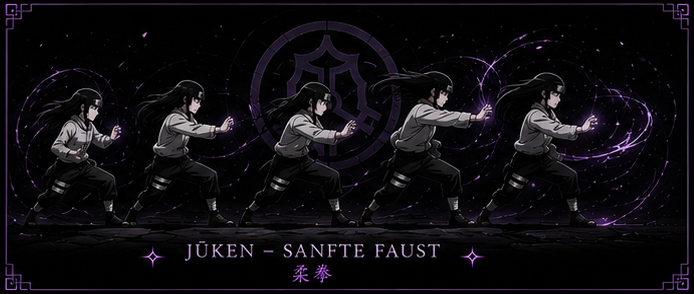
Ein geübter Anwender kann:
- Chakra blockieren
- Innere Organe verletzen
- Techniken unterbrechen
- Gegner kampfunfähig machen
- Kämpfe mit minimalem Kraftaufwand entscheiden
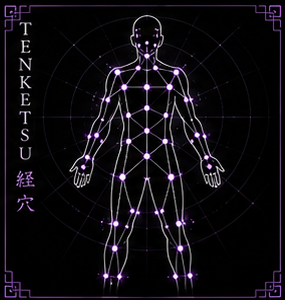
Die Effektivität des Juken beruht auf Präzision und perfekter Chakra-Kontrolle.
Die Acht Trigramme
Die berühmtesten Techniken des Hyuga-Clans basieren auf der Kampfkunst der Acht Trigramme.
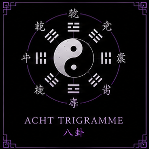
Sie verbinden das Byakugan mit höchster Präzision und einem kontrollierten Chakrafluss. Zu den bekanntesten Techniken gehören:
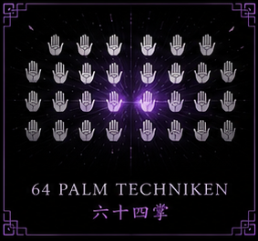
Diese Techniken gelten als Höhepunkt der Kampfkünste des Hyuga-Clans und können nur durch jahrelanges Training gemeistert werden.
Der Aufbau des Clans
Der Hyuga-Clan besitzt eine klar geregelte Organisationsstruktur, die auf Verantwortung, Erfahrung und gegenseitigem Respekt basiert.
Jede Position innerhalb des Clans bringt eigene Aufgaben und Pflichten mit sich und dient dem gemeinsamen Ziel, den Fortbestand des Clans zu sichern sowie seine Werte und Traditionen zu bewahren. Die Hierarchie soll dabei nicht nur Ordnung schaffen, sondern auch jedem Mitglied eine klare Orientierung und Entwicklungsmöglichkeit bieten.
Clanleiter
Die höchste Autorität des Hyuga-Clans, verantwortlich für alle Entscheidungen und Vertretung nach aussen.
- Führung und Organisation des Clans
- Wahrung der Traditionen und Clanwerte
- Vertretung des Clans nach aussen
- Ernennung und Beförderung von Mitgliedern
- Entscheidung über Disziplinarmassnahmen
- Verwaltung geheimer Techniken und Clanangelegenheiten
Stellvertreter
Unterstützt die Clanleitung und übernimmt die Leitung bei deren Abwesenheit.
- Unterstützung der Clanleitung
- Organisation interner Veranstaltungen
- Vermittlung zwischen Führung und Mitgliedern
- Kontrolle der Einhaltung des Ehrenkodex
- Unterstützung bei Prüfungen und Beförderungen
Älteste
Die erfahrensten Mitglieder, beratend an der Seite der Clanführung.
- Beratung der Clanleitung
- Ausbildung jüngerer Mitglieder
- Vermittlung der Clanphilosophie
- Unterstützung bei Prüfungen
- Bewahrung historischer Überlieferungen
Vollwertige Mitglieder
Das Fundament des Clans - nehmen an Missionen, Training und Versammlungen teil.
- Einhaltung des Ehrenkodex
- Regelmässige Teilnahme am Clanleben
- Würdige Vertretung innerhalb und ausserhalb Konohagakures
Schüler
Befinden sich in der Ausbildung, begleitet von erfahrenen Clanmitgliedern.
- Chakra-Kontrolle
- Grundlagen des Byakugan
- Erlernen des Juken
- Verhalten innerhalb des Clans
- Disziplin und Respekt
Das Hyuga-Anwesen
Das Anwesen des Hyuga-Clans befindet sich innerhalb Konohagakures und zählt zu den grössten privaten Anlagen des Dorfes.
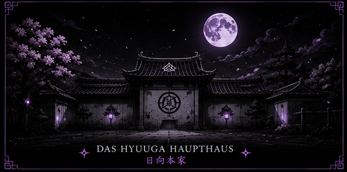
Hohe Mauern, bewachte Tore und weitläufige Innenhöfe schützen den Besitz des Clans und bieten seinen Mitgliedern einen Ort der Sicherheit und des Zusammenhalts. Das Anwesen ist weit mehr als ein Wohnort - es bildet das Zentrum des gesamten Clanlebens.
Das Haupthaus
Sitz der Clanleitung. Hier werden wichtige Entscheidungen getroffen, Versammlungen abgehalten und offizielle Gäste empfangen - Symbol der Einheit und Führung des Clans.
Wohnhäuser
Mehrere Wohnhäuser, in denen die verschiedenen Familien des Clans leben und zur Gemeinschaft beitragen.
Das Dojo
Herzstück der Ausbildung. Hier werden sämtliche Techniken des Juken gelehrt und perfektioniert - Anfänger wie erfahrene Mitglieder trainieren gemeinsam.
Trainingsgelände
Platz für Sparringskämpfe, Chakra-Kontrolle, Teamtraining, Prüfungen und individuelles Training sowie Clanveranstaltungen.
Meditationsgarten
Dient der inneren Ruhe und Konzentration - Vorbereitung auf Prüfungen und Missionen sowie Verbesserung der Chakra-Kontrolle.
Das Archiv
Aufbewahrung bedeutender Dokumente: Stammbäume, historische Aufzeichnungen, Schriftrollen, geheime Techniken, Clanchroniken. Zugang nur für autorisierte Mitglieder.
Versammlungshalle
Mittelpunkt aller offiziellen Zusammenkünfte: Clanversammlungen, Ernennungen, Prüfungen, Zeremonien und Feierlichkeiten.
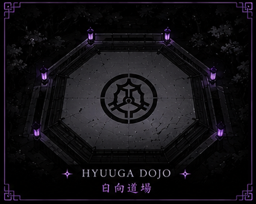
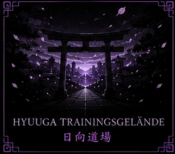
Der Ehrenkodex
Der Ehrenkodex bildet die Grundlage des Zusammenlebens innerhalb des Hyuga-Clans.
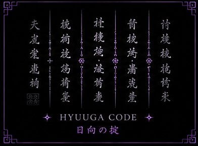
Er dient der Wahrung von Disziplin, Ordnung und dem guten Ruf des Clans. Jedes Mitglied ist verpflichtet, diese Grundsätze zu kennen und nach ihnen zu handeln.
Ehre des Clans
Das Wohl und das Ansehen des Hyuga-Clans stehen über den persönlichen Interessen des Einzelnen. Jeder Hyuga trägt Verantwortung dafür, den Ruf des Clans durch sein Verhalten zu schützen und zu stärken.
Loyalität
Loyalität gegenüber dem Clan, seiner Führung und seinen Mitgliedern ist unverzichtbar. Entscheidungen der Clanleitung werden respektiert und gewissenhaft umgesetzt.
Disziplin und Selbstbeherrschung
Ein Hyuga handelt stets mit Bedacht und Kontrolle. Unüberlegte Entscheidungen oder impulsives Verhalten widersprechen den Grundwerten des Clans.
Achtung der Hierarchie
Die Rangordnung innerhalb des Clans dient der Ordnung und Stabilität. Weisungen ranghöherer Mitglieder sind zu befolgen, sofern sie den Werten und Regeln des Clans entsprechen.
Verantwortung im Umgang mit den Clantechniken
Das Byakugan und der Sanfte Fauststil sind das grösste Erbe des Hyuga-Clans. Ihr Einsatz erfolgt ausschliesslich verantwortungsvoll und niemals zum persönlichen Machtgewinn oder Missbrauch.
Pflichtbewusstsein
Jedes Mitglied trägt Verantwortung für den Fortbestand des Clans. Persönliche Interessen treten hinter den Pflichten gegenüber der Gemeinschaft zurück.
Geschlossenes Auftreten
Interne Angelegenheiten werden innerhalb des Clans geklärt. Nach aussen tritt der Hyuga-Clan stets geschlossen, respektvoll und geeint auf.
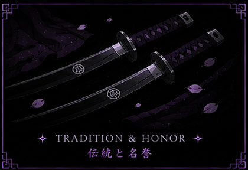
Verstösse gegen den Ehrenkodex werden durch die Clanleitung geprüft und entsprechend ihrer Schwere bewertet. Sämtliche Massnahmen dienen dem Erhalt der Ordnung und nicht der willkürlichen Bestrafung einzelner Mitglieder.
- Mündliche Verwarnung
- Schriftliche Verwarnung
- Entzug von Privilegien
- Zeitweilige Suspendierung von Clanaufgaben
- Degradierung innerhalb der Clanstruktur
- Zuordnung zur Zweigfamilie und Anwendung des Käfigvogel-Siegels
Das Käfigvogel-Siegel
Das Hyuga Soke no Juinjutsu, besser bekannt als Käfigvogel-Siegel, gehört zu den ältesten und bedeutendsten Siegeltechniken des Hyuga-Clans.
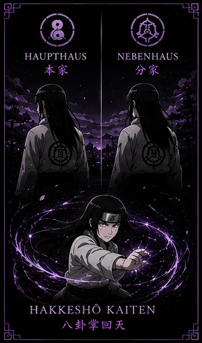
Ursprünglich diente das Siegel dazu, die Geheimnisse des Byakugan zu schützen und die Autorität der Hauptfamilie gegenüber der Zweigfamilie zu sichern. Innerhalb dieses Clan-Konzepts besitzt das Siegel zusätzlich eine disziplinarische Funktion.
Mitglieder, die wiederholt oder schwerwiegend gegen den Ehrenkodex verstossen, können durch Beschluss der Clanleitung der Zweigfamilie zugeordnet werden.
Der Einsatz des Siegels erfolgt ausschliesslich nach sorgfältiger Prüfung und niemals aus persönlichen Motiven. Sein Zweck besteht darin, die Ordnung des Clans zu wahren und gleichzeitig langfristige Rollenspielmöglichkeiten sowie interne Konflikte glaubwürdig darzustellen.
Interne Rangstruktur
Die Rangordnung des Hyuga-Clans im Überblick - von der Clanleitung bis zu den Schülern.
Jede Ebene bringt eigene Aufgaben mit sich, wie in Kapitel 08 beschrieben. Der Aufstieg zwischen den Ebenen erfolgt leistungs- und wertebasiert, siehe Kapitel 13.
Das Aufstiegssystem
Jeder Aufstieg erfolgt leistungsorientiert und basiert sowohl auf praktischen Fertigkeiten als auch auf Verhalten, Engagement und Loyalität.
Ein höherer Rang stellt keine Belohnung dar, sondern bringt grössere Verantwortung gegenüber dem Clan und seinen Mitgliedern mit sich.
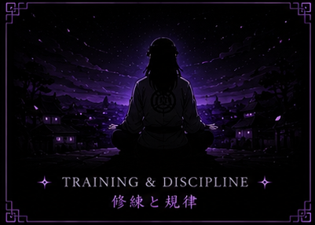
Jedes neue Mitglied beginnt seine Laufbahn als Schüler. Während dieser Ausbildungszeit werden die Grundlagen des Clans vermittelt und die persönliche Entwicklung beobachtet. Die Ausbildung umfasst unter anderem:
- Geschichte des Hyuga-Clans
- Ehrenkodex und Clanregeln
- Grundlagen des Byakugan
- Einführung in den Sanften Fauststil (Juken)
- Chakra-Kontrolle
- Verhalten innerhalb des Clans und Respekt gegenüber Ranghöheren
Erst nach erfolgreichem Abschluss der Ausbildung kann ein Schüler zum vollwertigen Mitglied ernannt werden.
Theoretischer Teil
- Kenntnisse des Ehrenkodex
- Verständnis der Clanregeln
- Wissen über Geschichte und Traditionen
- Grundkenntnisse über das Byakugan
- Verständnis der Hierarchie
Praktischer Teil
- Kontrolle des Chakras
- Umgang mit dem Byakugan
- Grundlagen des Juken
- Sparring gegen ein erfahrenes Mitglied
- Auftreten unter Druck und Disziplin während der Prüfung
Nur wer beide Prüfungsteile erfolgreich besteht, wird als vollwertiges Mitglied aufgenommen.
Der Aufstieg innerhalb des Clans erfolgt nicht ausschliesslich aufgrund von Stärke oder Kampferfahrung. Entscheidend sind insbesondere Aktivität innerhalb des Rollenspiels, Einhaltung des Ehrenkodex, Loyalität, Zuverlässigkeit, Verantwortungsbewusstsein, Unterstützung anderer Mitglieder, Teilnahme an Clanveranstaltungen und Vorbildfunktion. Beförderungen werden gemeinsam durch den Clanleiter und den Stellvertreter beschlossen.
Mit jeder Beförderung wachsen auch die Erwartungen: Mitglieder höherer Ränge sollen jüngere Mitglieder fördern, Konflikte schlichten, den Ehrenkodex vorleben, Verantwortung übernehmen und den Clan nach aussen würdig vertreten. Der Rang ist Ausdruck des Vertrauens, das der Clan einem Mitglied entgegenbringt.
Stärken und Schwächen
Der Hyuga-Clan besitzt zahlreiche Eigenschaften, die ihn zu einem der stärksten Taijutsu-Clans der Shinobi-Welt machen - doch auch die Hyuga besitzen Grenzen.
Stärken
Herausragende Wahrnehmung
Durch das Byakugan können selbst kleinste Bewegungen, Chakraflüsse und versteckte Gegner erkannt werden.
Perfekte Chakra-Kontrolle
Ermöglicht den Einsatz hochentwickelter Techniken und macht den Juken erst möglich.
Meister des Nahkampfes
Nur wenige Clans erreichen im direkten Nahkampf das Niveau der Hyuga.
Defensive Stärke
Techniken wie die Himmlische Rotation bieten ausgezeichnete Verteidigung.
Disziplin und Teamfähigkeit
Ruhiges, kontrolliertes Handeln unter Druck sowie eine starke Rolle als Späher und Unterstützer im Team.
Schwächen
Begrenzter Fernkampf
Der Schwerpunkt der Kampfkünste liegt eindeutig im Nahkampf.
Hoher Trainingsaufwand
Das vollständige Beherrschen des Byakugan und des Juken erfordert viele Jahre intensiven Trainings.
Abhängigkeit vom Byakugan
Ein erheblicher Teil der Kampftechniken setzt den Einsatz des Byakugan voraus.
Grossflächige Angriffe
Gegner mit grossflächigen oder schwer vorhersehbaren Angriffen können selbst erfahrene Hyuga vor Herausforderungen stellen.
Bedeutende Mitglieder
Im Laufe der Geschichte brachte der Clan zahlreiche aussergewöhnliche Shinobi hervor.
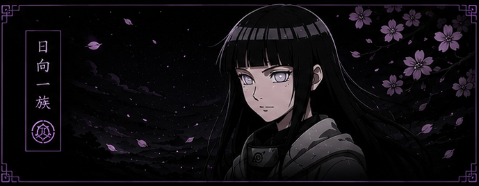
Hiashi Hyuga
War viele Jahre Oberhaupt des Hyuga-Clans und setzte sich für dessen Weiterentwicklung ein. Galt als einer der stärksten Anwender des Byakugan seiner Generation.
Hizashi Hyuga
Zwillingsbruder Hiashis. Sein Opfer zum Schutz des Clans zählt zu den bedeutendsten Ereignissen der Clan-Geschichte und beeinflusste spätere Reformen nachhaltig.
Neji Hyuga
Galt als Ausnahmetalent und meisterte bereits in jungen Jahren zahlreiche geheime Techniken des Clans. Trug massgeblich dazu bei, alte Traditionen zu hinterfragen und den Zusammenhalt zwischen Haupt- und Zweigfamilie zu stärken.
Hinata Hyuga
Entwickelte sich von einer zurückhaltenden Kunoichi zu einer starken und entschlossenen Vertreterin des Clans. Ihr Mitgefühl und ihre Entschlossenheit machten sie zu einem Vorbild für viele jüngere Mitglieder.
Hanabi Hyuga
Zählt zu den talentiertesten Hyuga ihrer Generation. Durch ihre Fähigkeiten und ihr Pflichtbewusstsein gilt sie als würdige Vertreterin der Traditionen des Clans.
Das Clanwappen
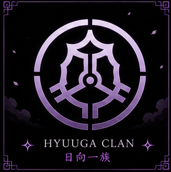
Das Wappen des Hyuga-Clans steht für Reinheit, Klarheit und die aussergewöhnliche Wahrnehmung des Byakugan. Auf Kleidung, Bannern, Schriftrollen und offiziellen Dokumenten erinnert das Wappen jedes Mitglied daran, die Werte des Clans jederzeit zu vertreten.
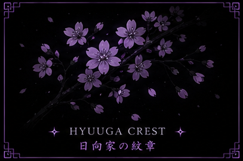
Der Hyuga-Clan gehört seit Jahrhunderten zu den tragenden Säulen Konohagakures. Seine Geschichte ist geprägt von Disziplin, Tradition und dem stetigen Streben nach Perfektion. Das Byakugan und der Sanfte Fauststil machen seine Mitglieder zu aussergewöhnlichen Shinobi, doch ihre wahre Stärke liegt in ihrem Charakter, ihrer Loyalität und ihrem Verantwortungsbewusstsein.
Dieses Handbuch dient nicht nur als Nachschlagewerk, sondern als Leitfaden für jedes Mitglied des Clans. Es soll die Geschichte bewahren, die Werte vermitteln und zukünftige Generationen daran erinnern, was es bedeutet, ein Hyuga zu sein.
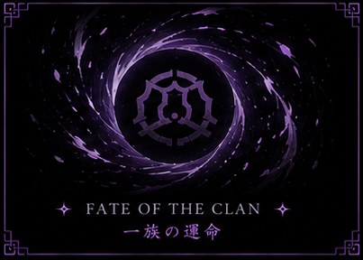
"Ein Hyuga wird nicht durch seine Augen definiert,
sondern durch die Ehre, mit der er seinen Weg beschreitet."